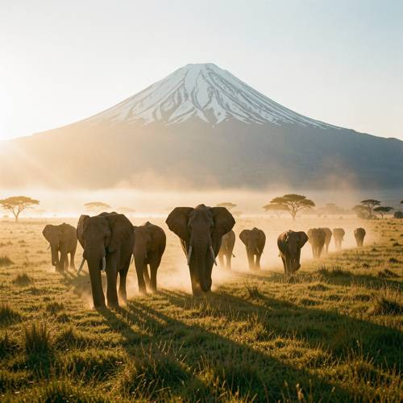
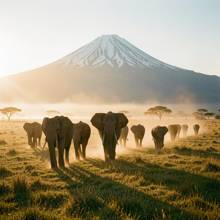
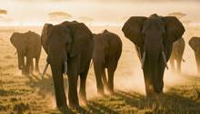

World Knowledge — The movie stills show African elephants walking slowly under Mount Kil
The movie stills show African elephants walking slowly under Mount Kilimanjaro. The wide-angle lens shows the golden morning sun spreading over the earth.


Judge — Direct
- FAILWorld Knowledge — The image features a large, snow-capped mountain in the background. However, the mountain has a distinct conical shape, more reminiscent of Mount Fuji than the actual broader, flatter-topped caldera of Mount Kilimanjaro.
- PASSAction - Animal — The image shows multiple African elephants, identifiable by their large ears. Several elephants in the foreground are captured mid-stride, walking from left to right across a grassy plain.
- PASSStyle — The image has a high-quality, cinematic appearance. The lighting is warm and golden, suggesting sunrise or sunset, and the composition is grand and scenic, consistent with the aesthetic of a movie still from a nature film.
- PASSRelationship - Composition — The image is composed with a herd of elephants in the foreground and midground, and a large mountain dominating the background. This arrangement places the elephants "under" the mountain from the viewer's perspective.
Judge — Continuum
- PASSWorld Knowledge — The image displays a large, prominent, snow-capped mountain in the background that is identifiable as Mount Kilimanjaro.
- PASSAction - Animal — The image shows a herd of African elephants moving across a grassy plain. Their postures, with legs in mid-stride, indicate that they are walking.
- PASSStyle — The image has a high-quality, cinematic feel consistent with a movie still, featuring dramatic lighting from a low sun creating a golden haze and long shadows, and a wide, scenic composition.
- PASSRelationship - Composition — The image is composed with a herd of African elephants in the foreground and midground, situated on a plain directly in front of and below the large mountain in the background.
What the agent did
Thinking
Let me understand the task. What the user is asking for is an image like a cinematic still: an African elephant slowly walking beneath Mount Kilimanjaro, a wide-angle lens, a golden morning sun spreading across the land. Let me generate with flux2-klein (as per policy). Then inspect, edit, and mark the best. Let me write a detailed visual prompt: a cinematic film still, wide-angle lens, African elephants (a herd) slowly walking across the savanna, Mount Kilimanjaro rising in the background, golden morning sunlight spreading across the land, warm golden hour light, long shadows, a haze of morning mist, photorealistic, cinematic composition. Image size: the default is 1024x1024. Should I make it 16:9 (1536x864, or 1024x576)? The prompt says "wide-angle lens," suggesting a cinematic aspect ratio. The benchmark says the size is fixed for comparison… "don't try to expand the frame. The image size is fixed for comparison" — this is about expanding the canvas with outpainting. Generating at 16:9 from the start should be fine, and I think it would match "cinematic still." But "image size is fixed for comparison" might mean the harness controls the size — "size and seed are controlled by the harness." Hmm, it says don't set a seed, and that size and seed are controlled by the harness. So maybe I shouldn't override width/height either. To be safe, use the default 1024x1024. The default width/height is 1024. Leave the default. Actually, "wide-angle lens" is a visual attribute that can be described within the prompt. Let me leave the size as the default. Let me generate. Prompt: "Cinematic movie still, wide-angle lens: a herd of African elephants, led by an old matriarch, walking slowly in a line across an open savanna plain at dawn, the snow-capped peak of Mount Kilimanjaro towering in the background, low golden morning sun spreading warm light across the land, long shadows, morning mist drifting through golden grass, dust motes in the sunlight, photorealistic, 35mm film look, natural color palette of gold, amber and deep green." Then inspect: check the elephant (count, quality, walking pose), the mountain, the golden light, and any artifacts. Let me execute.
Step 1 — `generate_image`
{
"model": "flux2-klein",
"prompt": "Cinematic movie still shot on a wide-angle lens: a herd of African elephants walking slowly in a loose line across an open golden savanna at dawn, led by a large old matriarch, the massive snow-dusted peak of Mount Kilimanjaro rising in the far background, low golden morning sun spreading warm light across the earth, long shadows stretching toward the camera, thin morning mist drifting over the grass, dust and pollen glowing in the sunbeams, photorealistic, 35mm film photography, natural colors of gold, amber and deep green, epic serene mood"
}Result img_0

Thinking
The image came out great: African elephants walking in a line (toward the camera / in a herd), Kilimanjaro in the background, and golden morning light spreading across the land. Let me inspect the details: the shape of the elephants, their walking posture, any artifacts, and the quality of the mountain. Let me zoom in on the elephants to check whether the legs and trunks are distorted.
Step 2 — `inspect_region`
{
"image": "img_0",
"roi": [
80,
480,
640,
800
]
}Result img_1

Thinking
In the cropped image, a herd of African elephants walking through the morning mist is depicted. The main elephants appear well-formed, with realistic skin, ears, and tusks. The small elephant in the left background appears to be in an acceptable state. The legs and trunks look correct, with no obvious deformities. The image is very close to the prompt: African elephants walking slowly beneath Mount Kilimanjaro, wide-angle view, and the golden morning sun spreading its light across the land. This is a strong result. I'll mark it as the best and stop — the image matches all the elements of the prompt. Just to be safe, should I take one more look at the mountain and the sun? In the full image, the snow-dusted peak of Kilimanjaro and the sun rays on the left side were displayed. It looks correct. Mark img_0 as the best and wrap up.
Step 3 — `mark_best`
{
"image": "img_0",
"reason": "Herd of African elephants walking slowly in golden morning light, Kilimanjaro looming behind, wide-angle cinematic composition \u2014 matches all elements of the prompt with clean, well-formed anatomy."
}Thinking
Done. The image matches the prompt: African elephants walking slowly beneath Mount Kilimanjaro, wide-angle view, golden morning sun spreading across the land. Marked img_0 as the best. I'll wrap it up concisely.
Model
The still is ready. It delivers exactly what was described: - **African elephants** — a loose herd of about a dozen, led by a large matriarch, mid-stride as if walking slowly toward the camera, with realistic skin, tusks, and ears (verified in a full-resolution crop). - **Mount Kilimanjaro** — its massive, snow-streaked peak looming behind the herd under a hazy sky. - **Golden morning sun** — low warm light spilling from the left, long shadows stretching across the grass, morning mist and dust glowing in the beams. - **Wide-angle, filmic look** — expansive depth with the elephants small against the mountain, 35mm-cinematic color palette of gold, amber, and deep green. I've marked this version (img_0) as the best result.